Axion Research · static set three
This is the new set you asked for, made with the same method as the MRP ads rather than the one set two used. Each ad is a single photographic scene with the vial standing in it, and every word is placed afterwards in code over that scene. Nothing is drawn as type by the image model, so nothing can come out misspelled. Square and nine by sixteen are composed separately rather than cropped from one another, and the vial is seeded from your own product shot, so the glass, the blue cap, the crimp and the label are the real ones.
AD 01 · CROSSED
PROOF. A document beats a promise.
A document beats a promise. The struck word sets up the swap, VERIFY lands it, and the line underneath says exactly what ships with every lot.
scene aurora-ridge · cta VIEW COA
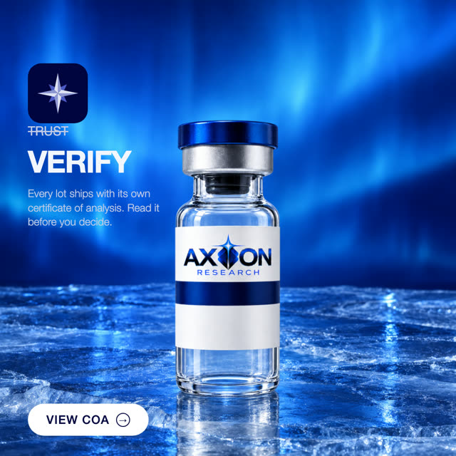
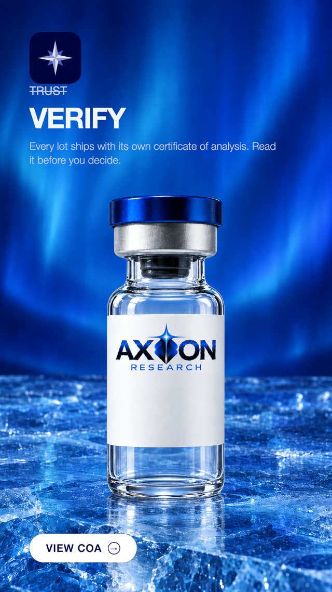
AD 02 · QUESTION BASED
THE QUESTION. Most buyers cannot answer it.
Asks the reader something about their own last purchase. The answer is uncomfortable, which is the point, and the sub gives them the way out.
scene glacier-core · cta VIEW COA
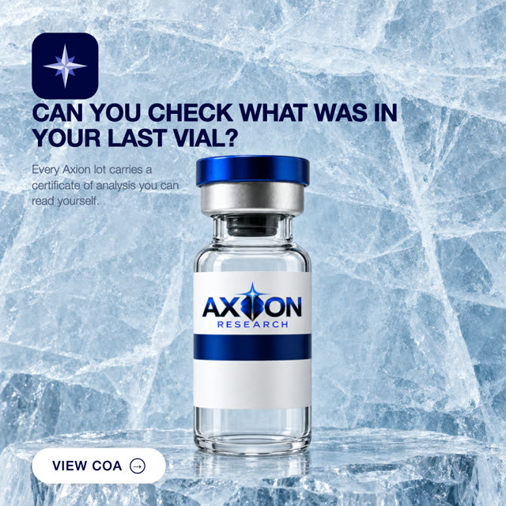
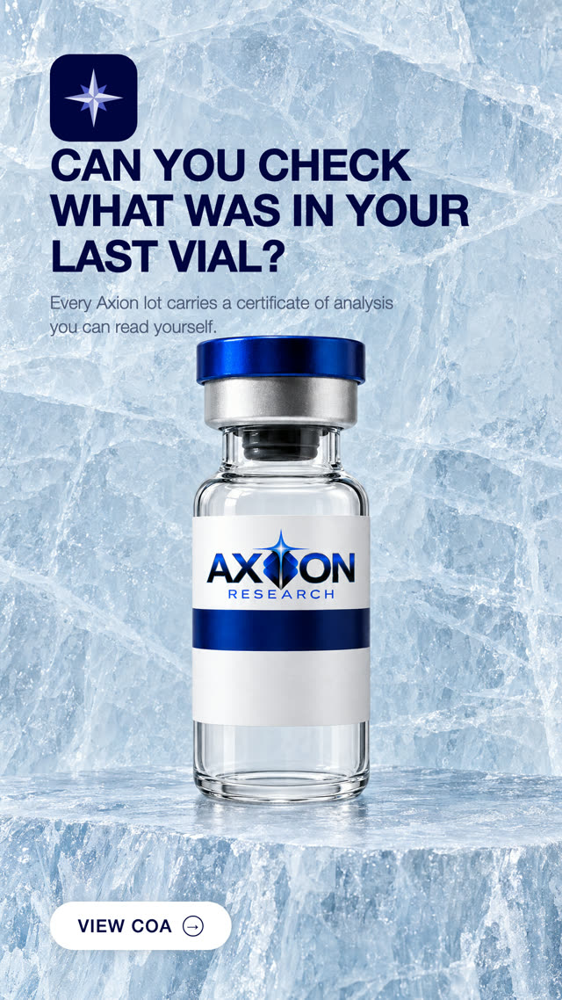
AD 03 · QUIZ
PICK ONE. The answer is the paperwork.
A quiz that only has one honest answer. The third option is the product, and the closing line makes it a fact rather than a boast.
scene clean-room · cta VIEW COA
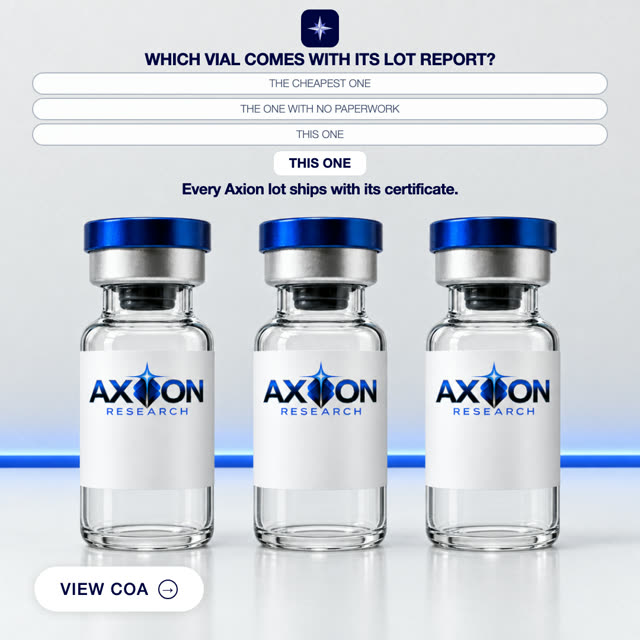
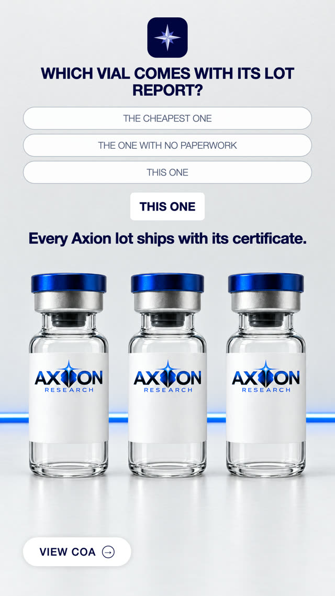
AD 04 · NEWS
THE STANDARD. Documented end to end.
Read as a notice rather than an ad. Documented end to end, with the lot number and the certificate named as a pair.
scene brushed-steel · cta LEARN MORE
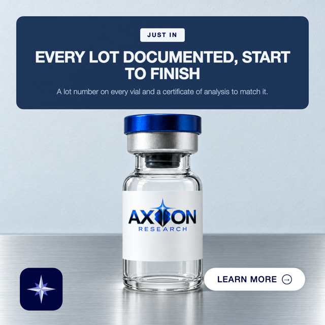
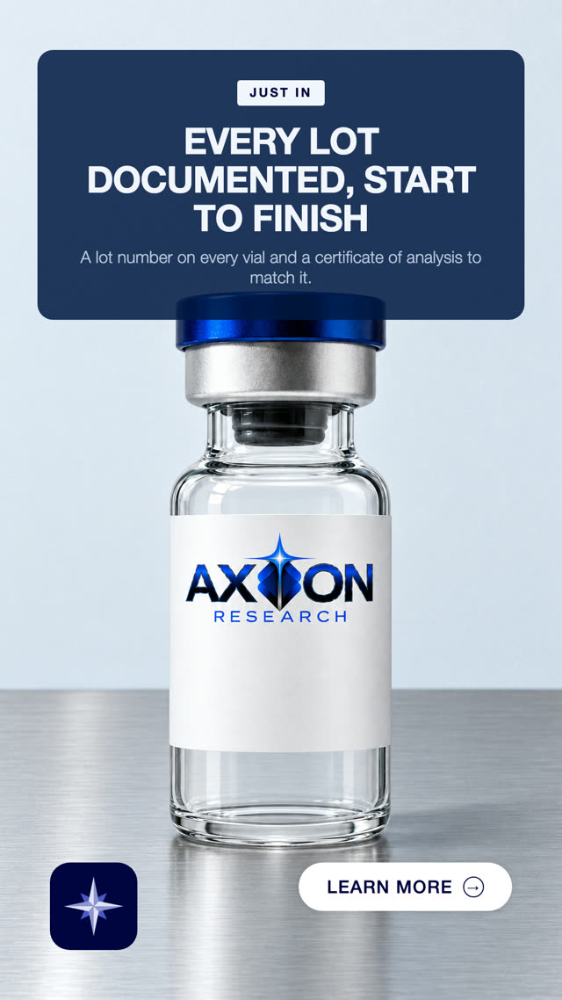
AD 05 · NEGATIVE
THE REVERSAL. Slow the buyer down on purpose.
Tells the reader not to buy, then gives the condition. It slows the scroll on purpose and still ends on the certificate.
scene deep-current · cta VIEW COA
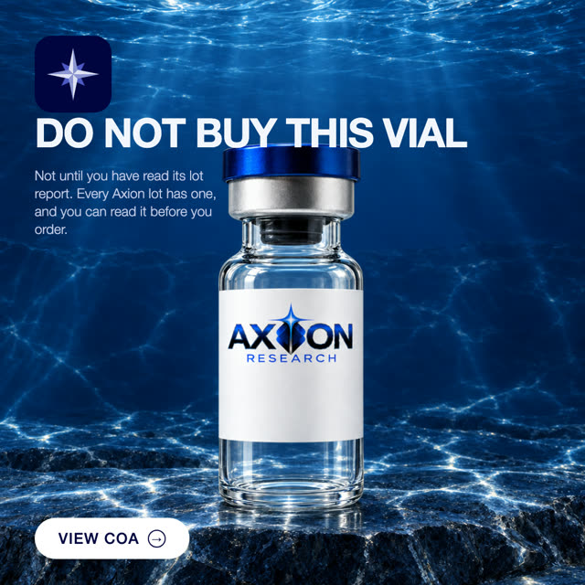
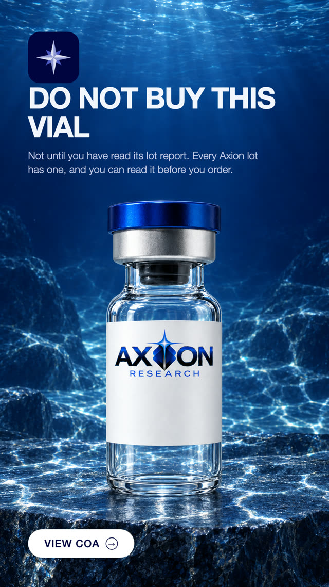
AD 06 · FEATURES
WHAT YOU GET. Four things you can see.
Four things a buyer can physically check when the box arrives. No claim about what the compound does, only about what is in the box.
scene beaded-glass · cta LEARN MORE
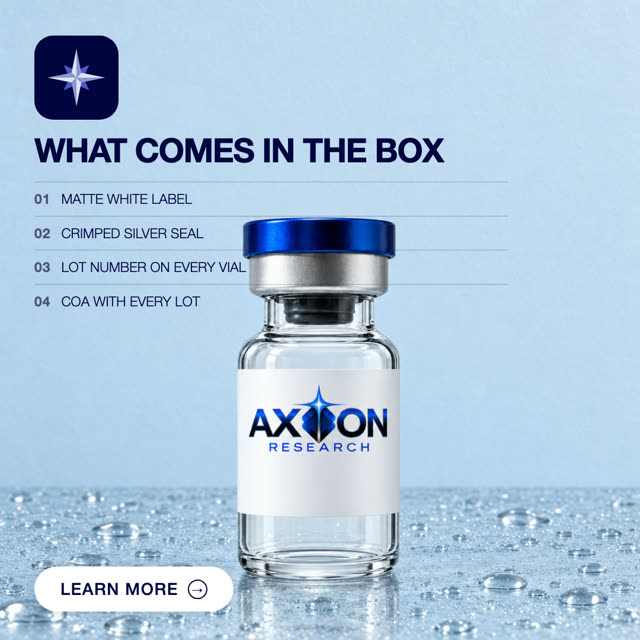
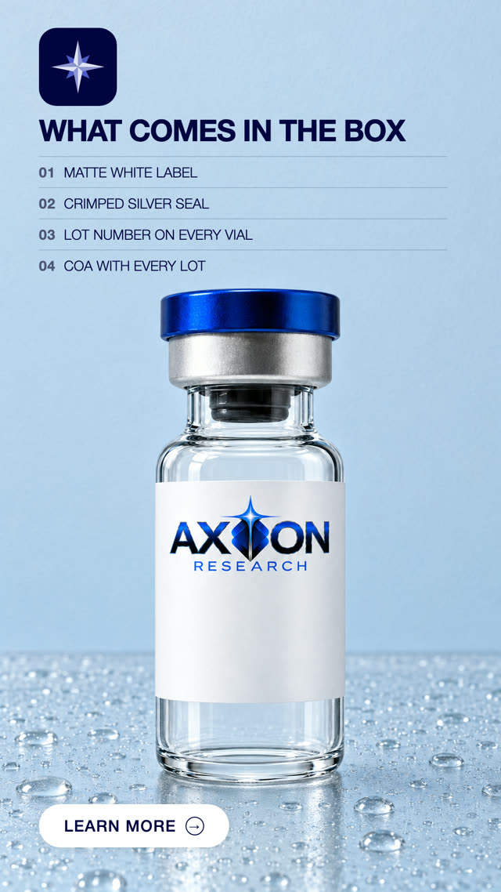
AD 07 · US VS THEM
THE COMPARISON. Documented against undocumented.
The comparison, with our own column on the light side. Both columns are things you can verify, not adjectives.
scene paired-plinths · cta LEARN MORE
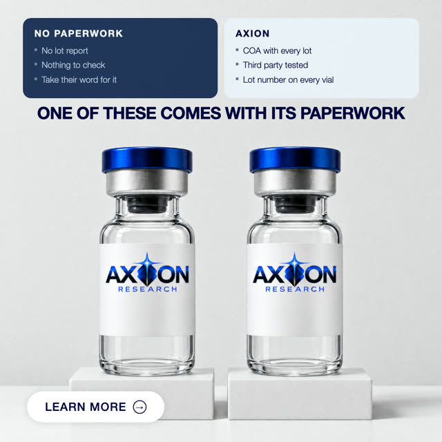
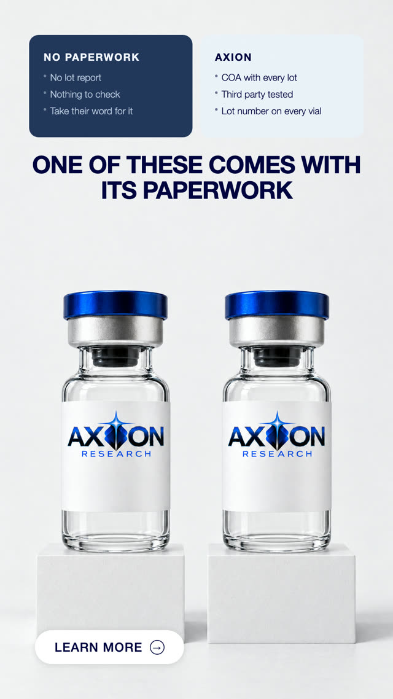
All fourteen at full size, 1080 by 1080 and 1080 by 1920 PNG.
One thing to decide. On the comparison ad, both vials in the photograph are Axion vials, so the column headed no paperwork sits above one of ours. It reads fine as a generic before and after, but if you would rather the left side were clearly not our product, say so and I will rebuild that one scene.
On the last set. Your screenshot did not say the ads were rejected. It said the ad requires a manual review that can take five to seven business days, over a note about issues on five ads, and that campaign holds exactly five ads. So the whole set was swept into review rather than any one creative being picked out. If this set lands in the same queue, that is not a verdict on the creative either, which is exactly the thing running it settles.